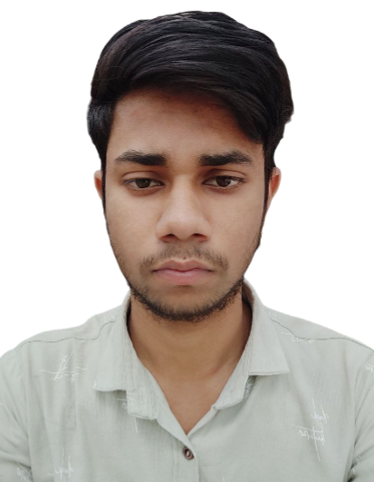

Mobile - 6387975718
Email - shivamvarma346@gmail.com
Linkedin - https://www.linkedin.com/in/sachin-verma-2951bb209/
Github - https://github.com/s4chin-verma
Seeking a challenging position that allows for the optimal utilization of my skills while providing opportunities to enhance both technical and managerial abilities, all with the aim of achieving organizational objectives.
| Level | Institution | University/Board | Year | Percentage/CGPA |
|---|---|---|---|---|
| B.Tech EE | Arya College of Engineering & I.T. | RTU | 2020-2024 | 8.2 |
| Intermediate | Adarsh Bajrang Inter College Banda U.P | UP BOARD | 2020 | 73.6 % |
| High School | Saraswati Vidya Mandir Inter College Banda U.P | UP BOARD | 2018 | 83 % |
I developed a real-time chat application using the MERN (MongoDB, Express.js, React, Node.js) stack, incorporating Socket.io for instant messaging functionality
Developed a dynamic To-Do List web application utilizing MongoDB, Express, Node.js, and EJS templating, enabling users to efficiently manage tasks with real-time updates.
Developed a dynamic Blog Website using Html, css, ejs templating,node.js and MongoDB
Programing Languages: C / C++
Development: Full Stack Web Development
Frameworks: Basic level of node.js and React.js
Platforms: Windows, Linux